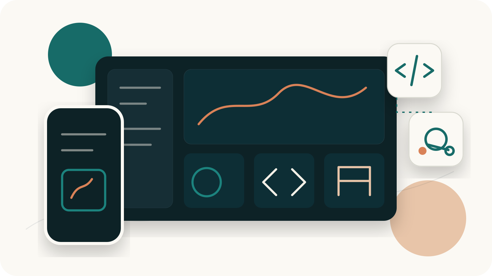
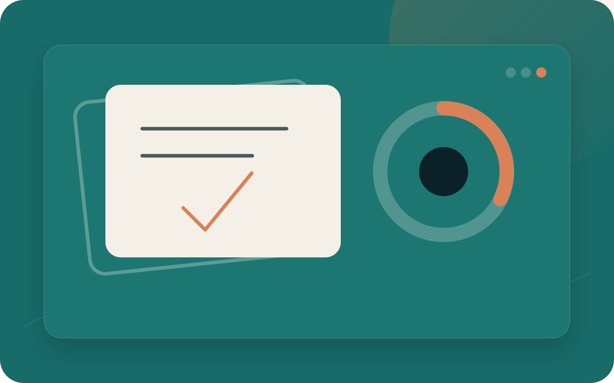
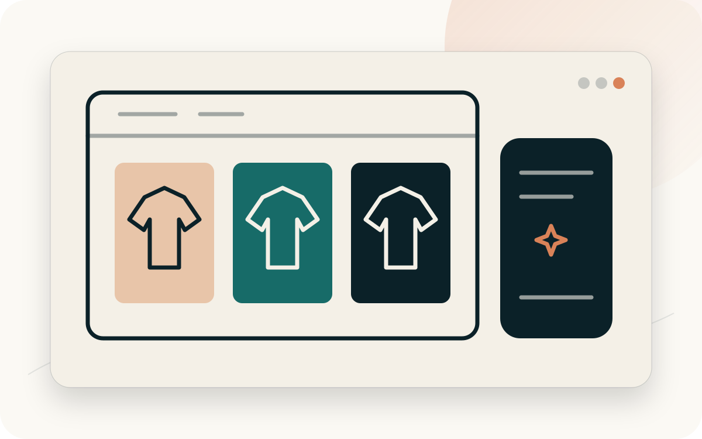
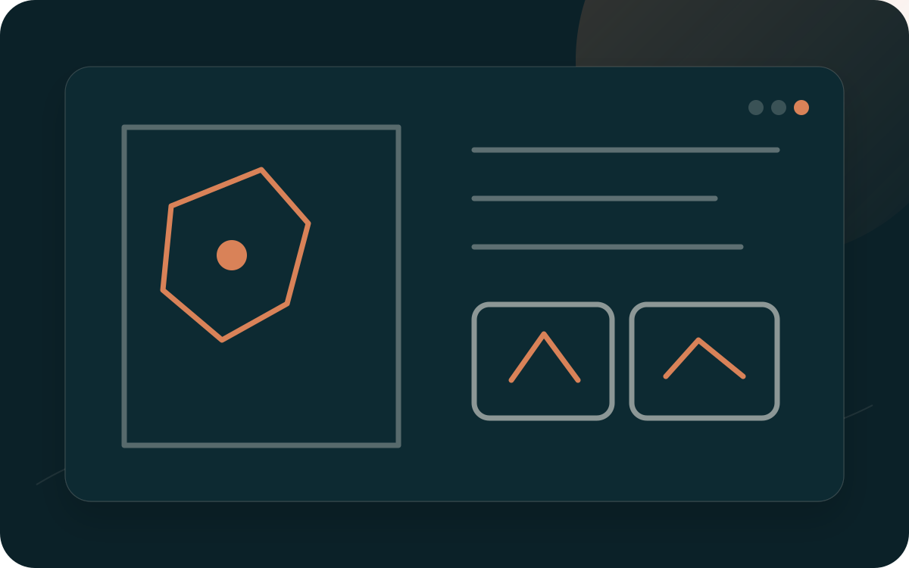
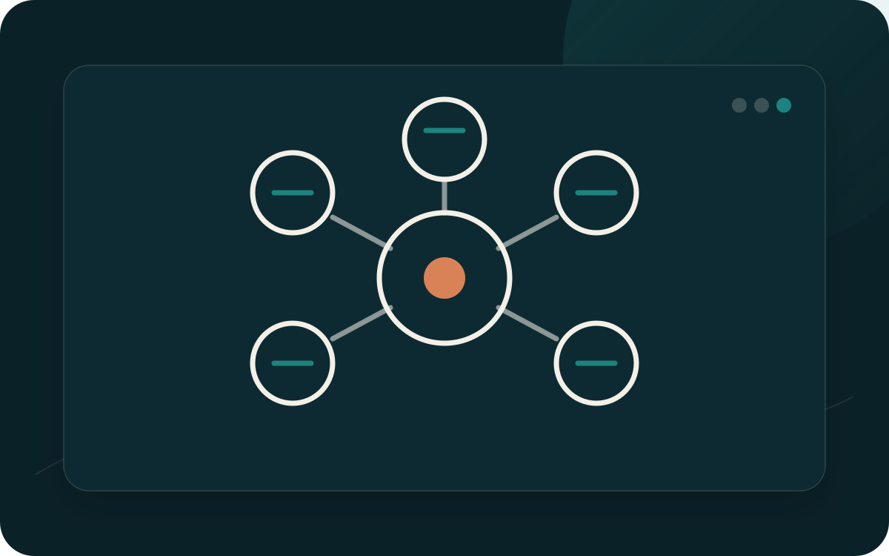
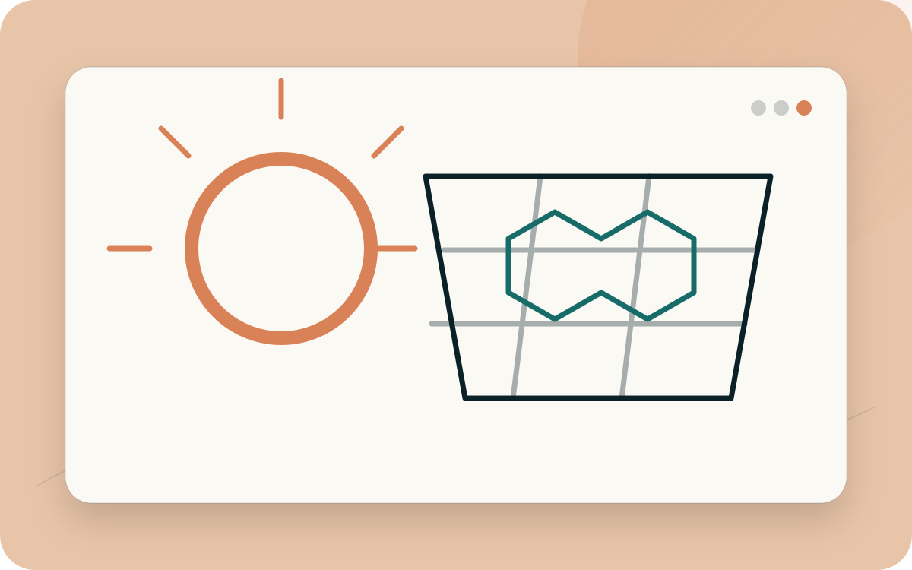
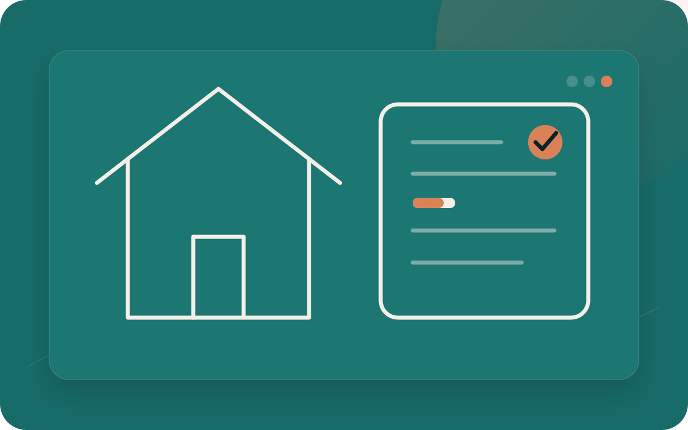
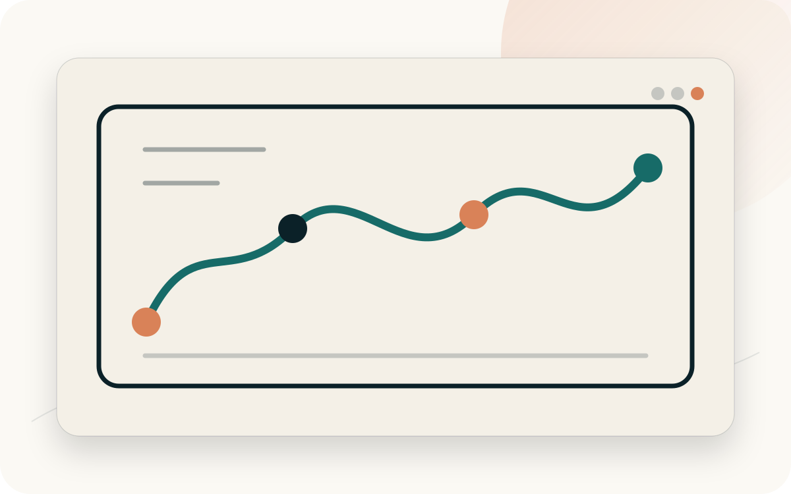
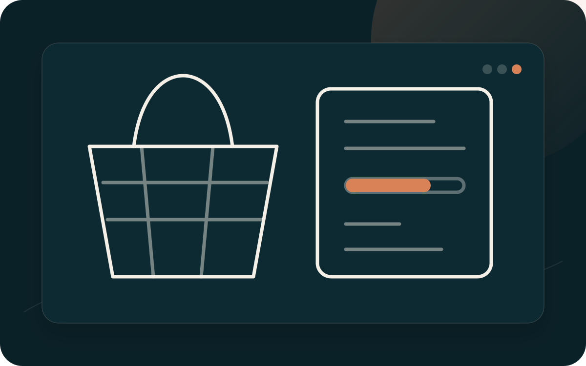
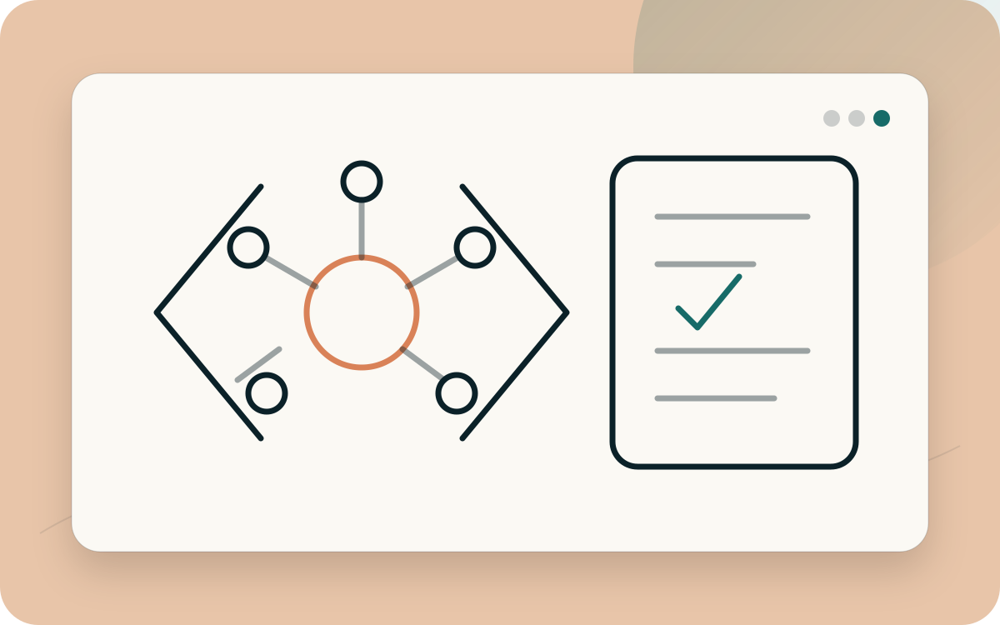

Produto · Engenharia
Aplicado em projeto
OrderFlow
Gestão de pedidos de e-commerce do cadastro à atualização de status, conectando interface, API, domínio e testes.
- C#
- .NET 8
- Angular
- TypeScript
- xUnit
Produto, experiência e código
Conecto decisões de produto, interfaces claras e desenvolvimento para transformar necessidades em experiências úteis.

Projetos selecionados
Filtre a seleção pelo ângulo que deseja conhecer. Alguns projetos atravessam mais de uma perspectiva.
10 projetos encontrados.
Em destaque
Produto · Engenharia
Aplicado em projeto
Gestão de pedidos de e-commerce do cadastro à atualização de status, conectando interface, API, domínio e testes.

Produto · UX/UI · Engenharia
Aplicado em projeto
Aplicativo web e mobile para criar baralhos, estudar com flashcards e acompanhar o progresso.

Produto · UX/UI
Aplicado em projeto
Landing page comercial responsiva para apresentar a marca, orientar visitantes e encaminhar contatos.
Outros projetos

Produto · UX/UI · Engenharia
Aplicado em projeto
Plataforma digital para organizar regras, personagens e ferramentas de um universo de RPG brasileiro.

Produto · Engenharia
Aplicado em projeto
Portal que reúne saúde, educação, cultura e ferramentas digitais em uma presença modular.

UX/UI · Engenharia
Aplicado em projeto
Landing page estática para apresentar uma proposta de tecnologia solar com leitura progressiva.

Produto · Engenharia
Aplicado em projeto
Aplicativo gamificado que transforma rotinas domésticas em missões compartilhadas.

Produto · Engenharia
Aplicado em projeto
Dashboard que converte estratégia, tarefas, agenda e acompanhamento em ações cotidianas.

Produto · Engenharia
Em desenvolvimento
MVP local de financiamento coletivo com recompensas para iniciativas do Ecossistema Pindorama.

Engenharia
Aplicado em projeto
Guia de aprendizagem sobre desenvolvimento com IA generativa, agents, contexto e validação.
Estudos de caso
Três leituras aprofundadas sobre domínio, experiência, interface e implementação.
Como construo
Investigar o problema, o contexto e para quem a solução será útil.
Organizar conteúdo, fluxos e tecnologia em uma base simples.
Implementar em ciclos curtos, verificar e aprender com o resultado.
Próxima conversa
Entre em contato para conversar sobre desenvolvimento de software, produto ou UX/UI.